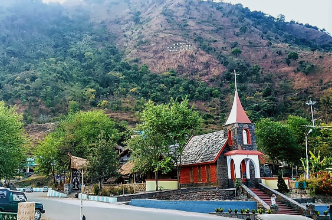
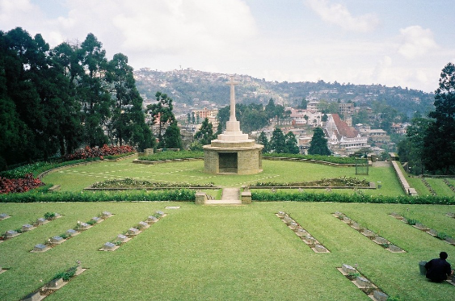
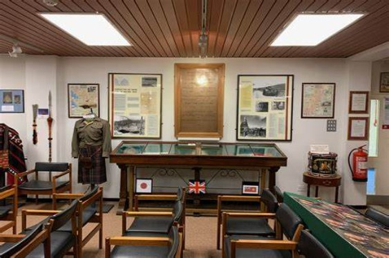

Kisama Heritage Village

Kisama Heritage Village, situated near Kohima in Nagaland, is the venue for the annual Hornbill Festival, a celebration of Naga culture and traditions. Visitors can immerse themselves in the vibrant atmosphere of the festival, featuring cultural performances, indigenous games, arts and crafts exhibitions, and local cuisine. The village itself showcases traditional Naga architecture and lifestyles, offering a fascinating glimpse into the rich heritage of the Naga people. The best time to visit is during the Hornbill Festival, usually held in the first week of December, to experience the vibrant cultural extravaganza.
months:The best time to visit Kisama Heritage Village is during the Hornbill Festival, which typically takes place in the first week of December.Kisama Heritage Village serves as the venue for the Hornbill Festival, providing a picturesque setting amidst the hills and forests of Nagaland. The village is designed to resemble a traditional Naga village, with thatched huts, wooden structures, and bamboo pavilions showcasing the architectural styles of the various Naga tribes.
During the festival, visitors to Kisama Heritage Village can experience the rich cultural diversity of Nagaland through a series of cultural performances, exhibitions, craft stalls, food stalls, and traditional games. The festival also features events such as indigenous sports competitions, rock concerts, fashion shows, and motorbike rallies, adding to the festive atmosphere.
Kohima War Cemetery

The Kohima War Cemetery, located in Kohima, Nagaland, is a solemn memorial dedicated to the soldiers who lost their lives during the Battle of Kohima in World War II. Visitors can pay their respects to the Allied forces who fought bravely in this pivotal battle, which halted the Japanese advance into India. The cemetery's serene surroundings and well-maintained graves
months:It can be visited throughout the year, but the best time to visit is during the dry season from October to April for more comfortable weather.The cemetery is beautifully landscaped, with well-maintained lawns, flower beds, and rows of white gravestones marking the graves of the fallen soldiers. The memorial is inscribed with poignant epitaphs and quotations, serving as a solemn reminder of the sacrifices made by the soldiers who fought and died for their countries.
Visitors to the Kohima War Cemetery can pay their respects to the fallen soldiers, reflect on the horrors of war, and learn about the history and significance of the Battle of Kohima. The cemetery also serves as a place of remembrance and reconciliation, attracting visitors from around the world to honor the memory of those who gave their lives for freedom and peace.
Kohima Museum

Kohima MuseumThe Kohima Museum, located in Kohima, Nagaland, offers a comprehensive overview of Naga history, culture, and traditions. Visitors can explore exhibits showcasing artifacts, photographs, and artworks related to the indigenous tribes of Nagaland. The museum provides valuable insights into the rich heritage of the region, including its role in World War II.
months: It can be visited throughout the year, but the best time to visit is during the dry season from October to April for more comfortable weather.Kohima, being the capital city of Nagaland, is rich in cultural heritage and history, so it's not uncommon for cities of such significance to have museums or cultural centers dedicated to preserving and showcasing their heritage.
If a "Kohima Museum" has been established, it would likely feature exhibits related to the history, culture, traditions, and heritage of Nagaland and its various indigenous tribes. It might include artifacts, photographs, documents, and interactive displays highlighting the diverse aspects of Nagaland's cultural landscape, including its art, music, dance, crafts, and religious practices.